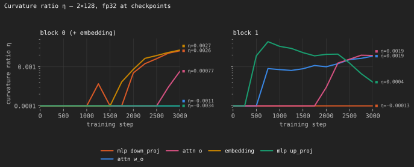
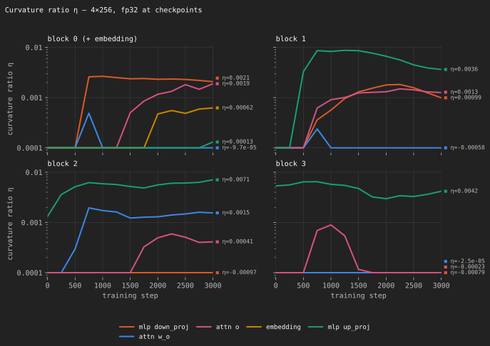
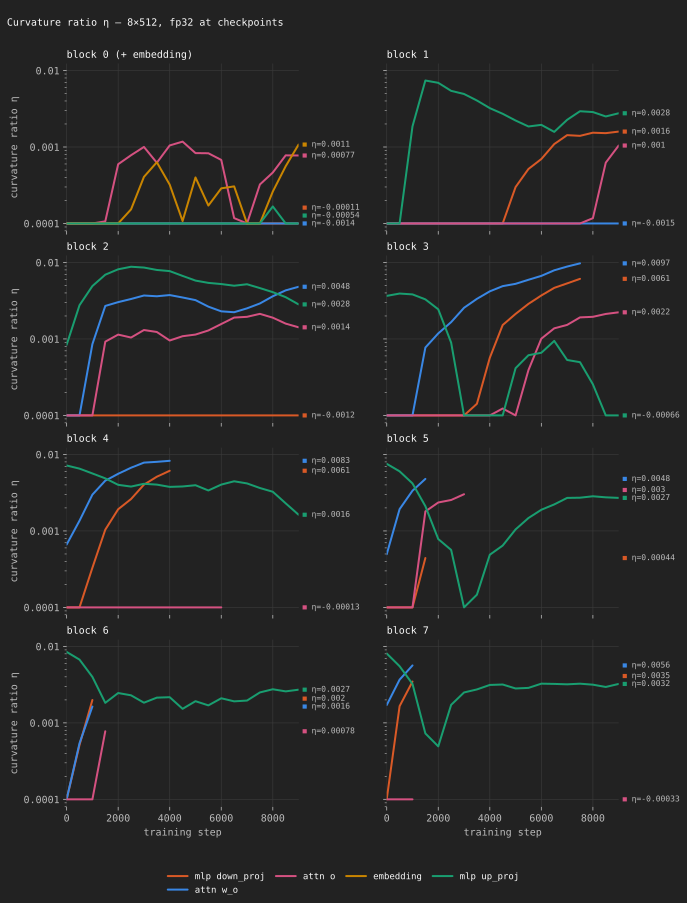
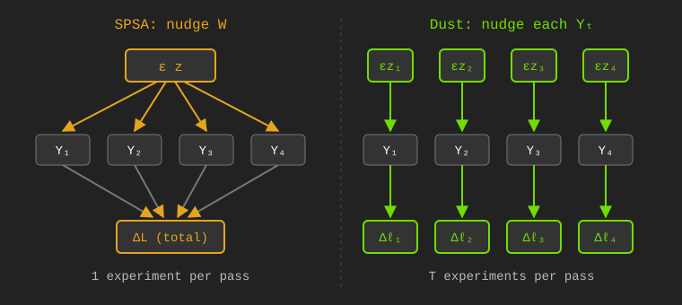
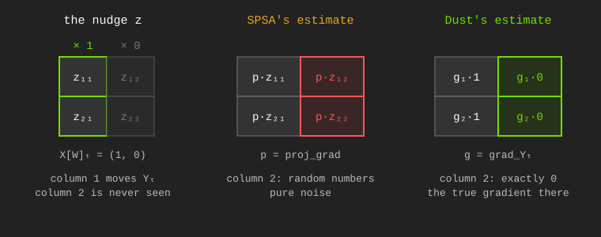
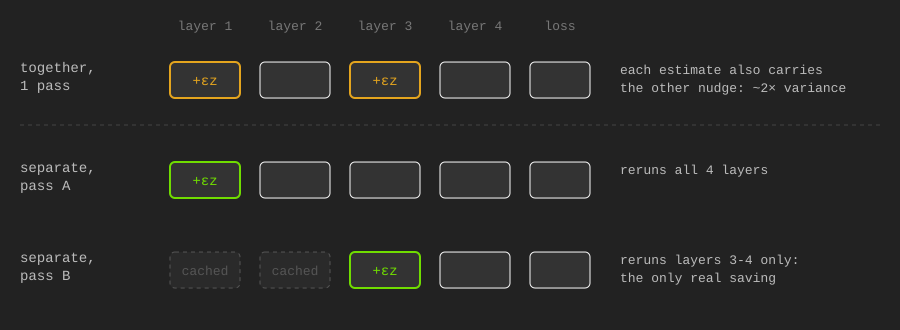
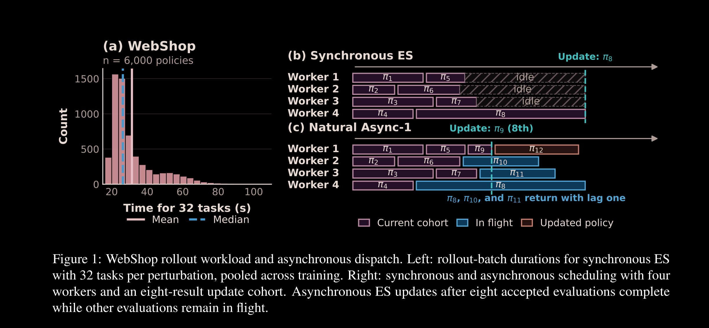
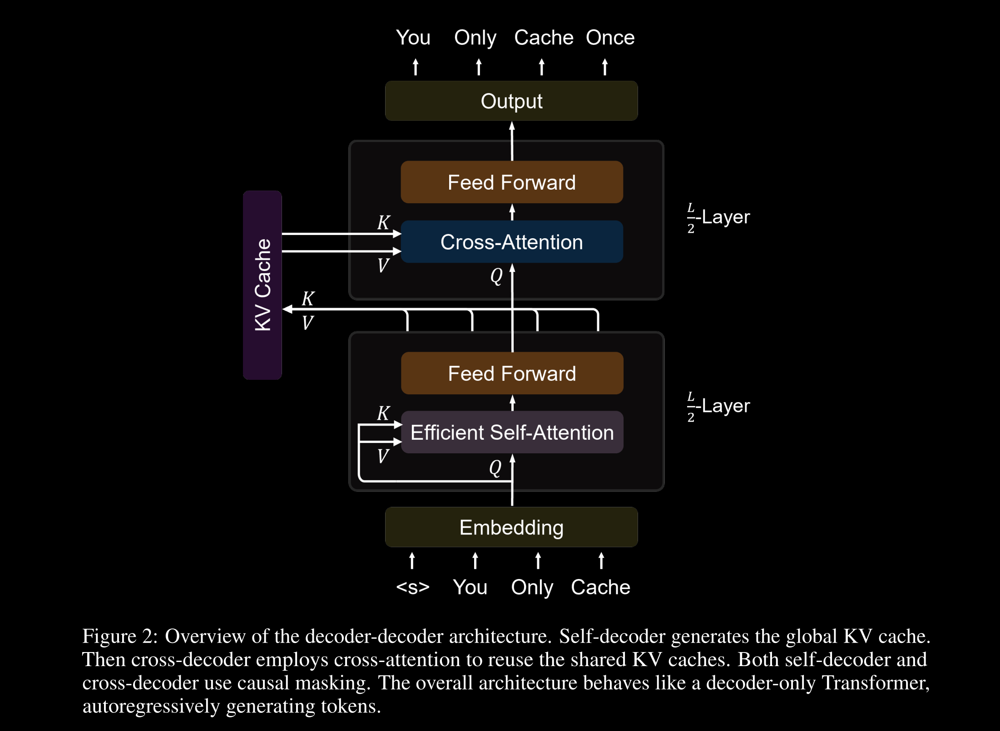
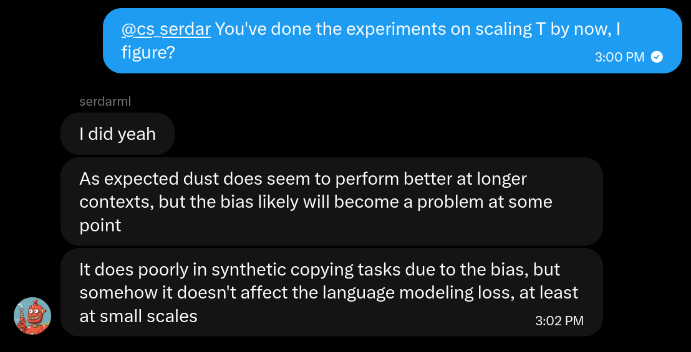
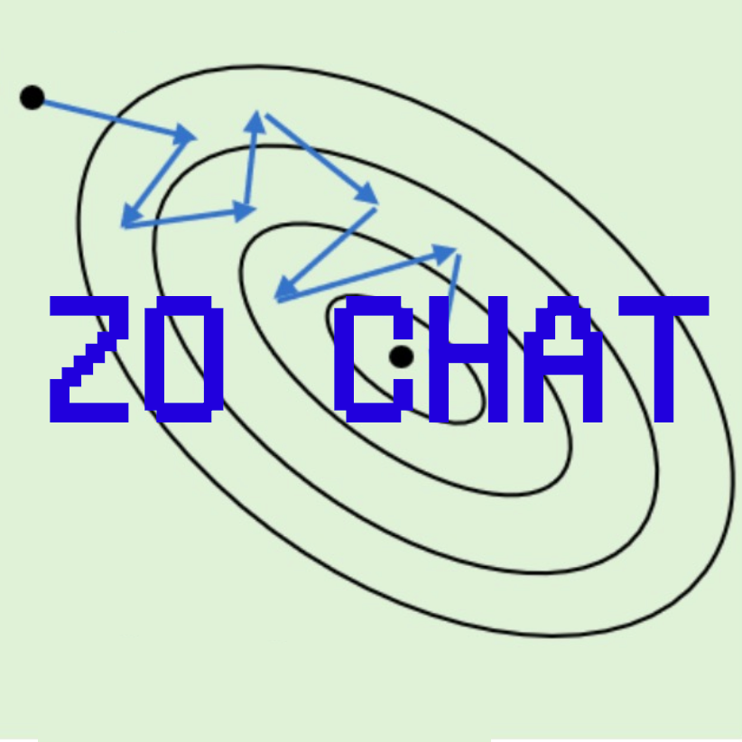

Since I wrote Scaling Agents to Unfathomable Depth and Context With Zeroth-Order Optimization, there have been multiple good Zeroth Order Optimization papers, particularly for pretraining. People have been asking for my take on them. So here I am, writing an article. But I got a bit carried away.
So, here's all the stuff I've been thinking about since the papers came out.
This is article going to appear really dense. That's fair, it's kinda a massive brain dump. Some parts are dense and complicated, but be not afraid, for the rest of the article is written to be very accessible.
If you want to understand the algorithms, I have summarized them here in pseudocode and a table of terminology. You can skip past them though. In the math section, there is going to be a lot of math. But it's written so you don't have to read the stuff that's outside of code blocks.
I sincerely recommend skimming. Then if you're curious you can dig deeper, and use AI assistance to answer questions. Or just DM me @apaz_cli, that works too.
The first standout paper is SOMA, by a team out of Stanford. Here's the method:
def soma_step(θ_e, b): # one update of one expert
grad_est = zeros(p // N)
for j in range(Z):
z = sparse_rademacher(p // N)
proj_grad = (L(Φ(θ_e + ε * z, b), E) - L(Φ(θ_e - ε * z, b), E)) / (2 * ε)
grad_est += proj_grad * z
grad_est /= Z
return adam_step(θ_e, grad_est, α)
def soma_train(data):
θ_seed, E = pretrain_briefly(data) # one model (N = 1); E is then frozen
D, centroids = kmeans(tfidf(data), N) # split data into N clusters
θ = [copy(θ_seed) for e in range(N)]
for e in range(N): # In parallel, on different machines
for b in batches(D[e], B):
θ[e] = soma_step(θ[e], b)
return θ, E, centroids
def soma_predict(θ, E, centroids, context):
S = nearest(centroids, tfidf(context), k)
return mean([softmax(Φ(θ[e], context) @ E.T) for e in S])| Term | Meaning | Type / Shape |
|---|---|---|
N |
number of experts = number of data clusters | int |
p |
total parameters across all experts | int |
θ[e] |
weights of expert e (small LSTM), flattened |
float [p/N] |
θ_seed |
weights of a briefly pretrained single model | float [p/N] |
Φ |
model architecture; returns hidden states | function → [B, T, d_E] |
E |
shared token embedding/decoder, frozen | float [V, d_E] |
V, d_E |
vocab size, embedding width | int |
L |
next-token cross-entropy, decoding through E |
function → float scalar |
data |
training data | dataset of token sequences |
D[e] |
data cluster e |
dataset of token sequences |
centroids |
k-means centroids of the clusters, in tf-idf feature space | float [N, d_tfidf] |
B, T |
sequences per batch, tokens per sequence | int |
b |
batch from D[e] |
int tensor [B, T] |
batches(D, B) |
iterates over D in batches of B
sequences |
generator of [B, T] |
θ_e |
weights of the one expert being updated | float [p/N] |
z |
random direction; each entry 0 w.p. ½, else ±1 | float [p/N] |
ε |
perturbation scale | float |
Z |
number of directions per step | int |
proj_grad |
central finite difference along z |
float scalar |
grad_est |
estimated gradient for θ[e] |
float [p/N] |
α |
learning rate | float |
context |
prompt at inference | int tensor [T] |
k |
experts used at inference | int |
S |
indices of the k experts whose cluster centroids are
nearest to context |
list of int |
The name of the paper is "Scaling Zero-Order Pretraining Through Model Sharding." That is true, we are doing that. But fundamentally, what we're doing is actually ensembling. We are not capable of pretraining good models with ZO. What if we pretrain a bunch of bad ones, and then ensemble? Then perhaps we can get a lot further.
I am not sure how to feel about this paper. On one hand, it seems obvious. Obviously you can get gains by ensembling. It's not something I would even think to publish. But on the other hand, nobody has pointed out before that Branch-Train-Merge clearly has applications in ZO. It didn't occur to me that this was a reasonable scaling axis.
If the noise issue in ZO pretraining truly cannot be beaten, then this and model merging are clearly the best strategy, and nobody is doing it. It doesn't solve any of the fundamental problems in ZO, and obviously it cannot scale past a certain size or training budget, but I'm glad we now have a good example of people doing this.
I think there's a good chance this ends up being really useful. With that being said, because of the Dust paper I think we actually CAN beat the noise issue. Then maybe this is a cherry on top.
I don't have a lot more to say about it other than that. Good paper on net.
The next is Dust, out of qlabs. The method:
def dust_step(θ, b):
ℓ, X = forward(Φ, θ, b) # save each layer's input X[W]
for W in linear_layers(θ):
grad_Y = zeros(T, d_out)
for j in range(Z):
z = randn(T, d_out)
ℓ_j = forward(Φ, θ, b, noise={W: ε * z}) # adds ε*z to Y, W's output
proj_grad = (ℓ_j - ℓ) / ε
grad_Y += proj_grad[:, None] * z
grad_Y /= Z
grad_est = grad_Y.T @ X[W]
W -= α * grad_est
return θ
def dust_train(θ, data):
for b in batches(data, T):
θ = dust_step(θ, b)
return θ| Term | Meaning | Type / Shape |
|---|---|---|
θ |
all model weights | list of tensors |
Φ |
model architecture | function |
data |
training data | dataset of token ids |
batches(data, T) |
iterates over data in batches of T
tokens |
generator of [T] |
b |
input batch | int tensor [T] (token ids) |
T |
number of tokens in b |
int |
L |
loss; returns one loss per token | function → [T] |
ℓ |
clean per-token loss, L(Φ(θ, b)) |
float [T] |
W |
weights of one linear layer | float [d_out, d_in] |
d_in, d_out |
that layer's input / output width | int |
X[W] |
input to layer W in the clean pass |
float [T, d_in] |
Y |
output of layer W in the clean pass,
X[W] @ W.T |
float [T, d_out] |
z |
gaussian noise added to Y, independent per token |
float [T, d_out] |
ε |
perturbation scale | float |
Z |
number of draws per layer | int |
ℓ_j |
per-token loss with noise added | float [T] |
proj_grad |
per-token finite difference | float [T] |
grad_Y |
estimate of ∂L/∂Y | float [T, d_out] |
grad_est |
estimated gradient for W |
float [d_out, d_in] |
α |
learning rate | float |
Dust seems like a massive step forward. It shows that many of the supposed issues with ZO for pretraining were in fact skill issues. This is great.
The upshot of the method is that we need to find more efficient ways to sample more perturbations, sharded across more axes. SOMA sort of does this, you can do DP and ensemble or merge.
But Dust attempts to tackle the main issue. What you really want is more perturbations sampled inside the model. The primary difference between Dust and previous methods is that each token gets a separate perturbation, and each layer gets a separate perturbation. This leads to a huge uplift in practical performance, for the same amount of data.
It is unfortunate, though, that this research direction kind of flies in the face of the reason I was excited about ZO in the first place. To train a recurrence-complete architecture without backprop through time. This method only works on transformers and other architectures with a parallelizable forward pass, in settings with loss functions that can be parallelized.
Specifically, to perturb by token you need the per-token losses ℓ, which does not exist if you're doing something like replacing RL. Because "how well was this task completed" not have a loss with per-token credit assignment. And per-token losses are not clean if you do something like roll out an RNN, because of the state dependence. And even if it might work on an RNN, it's expensive.
Still, the observation that each token and each layer is a place where you can effectively split to sample more perturbations is novel. Or, it makes a tremendous amount of sense in hindsight, but nobody thought of it until now. Let's make sense of it.
First, recall that training transformers is parallelizable. There are efficiency benefits for running everything at once, but efficiency is the only reason we batch. The forward pass for one token does not depend on the forward pass of the previous. The standard crossentropy objective just averages all those individual token losses. We know how much of the loss is that token's fault, and so if we perturb activations we can know how much of a change in loss is that token's fault.
Side tangent, that is not quite what Dust computes. Cross-entropy credits each token for its effect on every later token's loss. Dust only credits it for its own, so it never trains activations to be helpful for predicting later tokens. Except for the keys, values, gates, and value embeddings, which the Dust paper does not approximate for.
So, Dust doesn't follow the gradient of the loss we're actually training on. It's a biased estimator, which is to say an approximation. At small scales it appears to be a very good approximation. I measure the effect in some experiments later in the article.
Next, returning to the population size argument, recall from the last article the gradient variance formula for SPSA:
Var(grad_est) = ∇L(Φ(θ))² / Z
+ ∇L(Φ(θ,xᵢ))² / ZBWhere the first term is the noise from sampling perturbations, and the second is the noise from sampling batches of data. We want to make the sum of these two numbers go down. That is the most important thing for the scalability of ZO pretraining, or ZO training in general.
Scaling batch size B and perturbation sample count Z each reduce the variance. But you have the choice between scaling Z or B. Which do you scale? You scale Z, because it divides both terms, especially the first one, which becomes the dominant source of variance as you increase the parameter count. And we desperately want to increase the parameter count.
The virtual population method effectively takes you from the
B = seq_len
Z = n_pert
of SPSA on one sequence to
B = 1
Z = n_pert * seq_len
in Dust, because every token gets its own individual z.This is good. Big. Huge. It makes the SNR less terrible, and implies that ZO may be a great way to train on really really long sequences.
Of course, the math is not that simple. I said "effectively." The actual SNR also depends on other things. Let's get into that.
Let's redo the "MeZO Math" section from the last article, but for Dust's estimator. Like last article, you can skim by reading only the parts outside code blocks.
Dust's update is a gradient estimate, so we ask the usual questions. Is it unbiased? How noisy is it compared to what it's estimating? What SNR does that give? Then we'll compare it to MeZO and SPSA.
Consider a single linear layer W, with input
X and output Y. Dust adds gaussian noise to
Y, drawn separately for every token. For each token
t, the update rule is:
proj_gradₜ = (Lₜ(Φ(θ, b; Y + εz)) - Lₜ(Φ(θ, b))) / ε
grad_Yₜ = proj_gradₜ * zₜ
For some per-token loss function L, where Lₜ is the loss at token t,
some model architecture Φ,
the current model weights θ,
a batch of inputs b, containing T tokens,
the output Y of layer W, where Yₜ is token t's row, of width d_out,
the forward pass Φ(θ, b; Y + εz), which adds εz to Y and runs the rest of the model,
a gaussian distribution z ~ N(0,I) of the same shape as Y (sampled every draw), where zₜ is token t's row,
and a scalar hparam ε.For readability, let's say ∇ₛLₜ is the gradient of token
t's loss with respect to Yₛ, token
s's row of the layer output.
Recall that token t's loss can depend on Yₛ
for any s ≤ t, because attention in the later layers reads
from earlier tokens. It can't depend on s > t, because
of the causal mask.

We want to know two things about grad_Yₜ. We want to
know if it follows the true gradient (the signal, so to speak), and how
noisy our gradient estimate is. That is to say, what is its variance?
This allows us to derive the signal to noise ratio, or SNR.
First, is it unbiased? Let's apply a generalized
version of Stein's Lemma.
Apply it with f(z) = Lₜ(Φ(θ, b; Y + εz)):
E[grad_Yₜ] = E[proj_gradₜ * zₜ] (definition of grad_Yₜ)
= E[(Lₜ(Φ(θ, b; Y + εz)) - Lₜ(Φ(θ, b))) * zₜ] / ε (definition of proj_gradₜ)
= E[Lₜ(Φ(θ, b; Y + εz)) * zₜ] / ε - Lₜ(Φ(θ, b)) * E[zₜ] / ε (distribute)
= E[ε * ∇ₜLₜ(Φ(θ, b; Y + εz))] / ε (Cancel and apply chain rule, zₜ moves Yₜ by ε)
= E[∇ₜLₜ(Φ(θ, b; Y + εz))] (Stein's Lemma, taking ∇ with respect to zₜ)So, yes. The math works out. For each next token, the rule obtains that token's gradient. You can then average them and take a step.
But Dust is in fact a biased estimator. It calculates
∇ₜLₜ, which is how token t's activations
affect token t's loss. But these activations also affect
every later token's loss, through attention. The true gradient is:
∇ₜL = ∇ₜLₜ + Σᵤ>ₜ ∇ₜLᵤThat is a different thing than a reduction of the individual
∇ₜLₜ per-token gradients. But how much does this matter?
It's unclear. It doesn't seem to matter that much when it comes to just
reducing language modeling loss. But in the limit it might matter, it's
sort of an open question.
There is no Stein's Lemma for variance. But there's a trick. Split
the reward into the best linear function of the noise, plus whatever is
left over. By Stein's Lemma again (yay!), the best linear fit is
Σₛ ∇ₛLₜ · zₛ, for every token s ≤ t. Then
there is some uncorrelated extra part which is nonlinear, we'll call
this remainder term rₜ.
proj_gradₜ = Σₛ<ₜ ∇ₛLₜ · zₛ + rₜ (summing over s ≤ t)
E[proj_gradₜ²] = E[(Σₛ ∇ₛLₜ · zₛ)²] + E[rₜ²]
= Σₛ ||∇ₛLₜ||² + E[rₜ²]
= ||∇ₜLₜ||² + Σₛ<ₜ ||∇ₛLₜ||² + E[rₜ²]
= ||∇ₜLₜ||² * (1 + Σₛ<ₜ ||∇ₛLₜ||² / ||∇ₜLₜ||² + E[rₜ²] / ||∇ₜLₜ||²)
= ||∇ₜLₜ||² * (1 + κₜ + ηₜ)
where κₜ = Σₛ<ₜ ||∇ₛLₜ||² / ||∇ₜLₜ||²
ηₜ = E[rₜ²] / ||∇ₜLₜ||²The first part ||∇ₜLₜ||² is the irreducible variance
which comes from sampling in a direction, for one token.
The second part κₜ is the noise we added at tokens
earlier than t, leaking into token t's loss
through attention. We'll call it "leakage."
The third, ηₜ, is everything in the reward that isn't
linear in the noise. If the loss were a straight line across the noise,
it would be zero. The bigger ε is, the more the loss curves
over the step, and the bigger it gets. Using Rademacher perturbations
would minimize this, because it's the distribution with the minimum
possible fourth moment, but expect the effect to be small.
So, the the variance is MeZO's, times a (1 + κₜ + ηₜ)
penalty. κₜ is up to the model, ηₜ grows with
ε, which is a hyperparameter we can tune.
κₜ (kappa) and ηₜ (eta) are ratios. The
paper calls the leakage "interference," so I'll call κₜ the
interference ratio, and ηₜ the curvature ratio.
Now the SNR, for one perturbation of one token. Recall that the
signal is ||E[grad_Yₜ]||² = ||∇ₜLₜ||². Now for the
noise.
grad_Yₜ = proj_gradₜ * zₜ
so
E[||grad_Yₜ||²] = E[proj_gradₜ² * ||zₜ||²]
≈ E[proj_gradₜ²] * d_out (||zₜ||² is about d_out, and exactly d_out for Rademacher)
= ||∇ₜLₜ||² * (1 + κₜ + ηₜ) * d_outTherefore, we can define the tokenwise-layerwise SNR as follows.
SNR ≈ ||E[grad_Yₜ]||² / E[||grad_Yₜ||²]
= 1 / (d_out * (1 + κₜ + ηₜ))Since each token t of T tokens is
independent, and each draw of Z total draws of every layer
is independent, it is easy to derive the SNR of the full Dust
update.
SNR ≈ ZT / (d_out (1 + κ + η))This is for a cost of Z * n_layers many partial forward
passes, with a cost on average of half a full forward pass, as some will
be longer and some shorter. As opposed to the 2 * Z full
forward passes of SPSA.
Dust's estimator is biased. Here's the bias, and here's what the paper does about it.
Dust's per-token estimator targets ∇ₜLₜ, how token
t's activations affect token t's own loss. But
those activations also change the loss of every token that comes later,
through attention. The true gradient is the full causal sum:
∇ₜL = ∇ₜLₜ + Σᵤ>ₜ ∇ₜLᵤDust drops everything after the first term. For most parameters this is a small bias, which is why Dust works. But for the attention keys and values, the gates and value embeddings, the dropped terms are the signal.
The paper fixes it by crediting token t's jitter with a
decaying share of every later token's loss. Token u counts
for γ^(u-t) of its loss, for some discount γ
between 0 and 1:
L̃ₜ = Lₜ + γ·Lₜ₊₁ + γ²·Lₜ₊₂ + γ³·Lₜ₊₃ + ...
= Σᵤ≥ₜ γ^(u-t) LᵤThe paper writes this as a reward, rₜ = Σᵤ≥ₜ γ^(u-t) cᵤ,
built from centered loss reductions cᵤ. Same object,
opposite sign. I'll keep losses.
L̃ₜ is token t's loss plus a decaying share
of every later token's loss. The γ-estimator is Dust's rule with
L̃ₜ in place of Lₜ:
proj_gradₜ = (L̃ₜ(Φ(θ, b; Y + εz)) - L̃ₜ(Φ(θ, b))) / ε
grad_Yₜ = proj_gradₜ * zₜStein's Lemma again, applied to L̃ₜ:
E[grad_Yₜ] = ∇ₜL̃ₜ
= ∇ₜLₜ + γ·∇ₜLₜ₊₁ + γ²·∇ₜLₜ₊₂ + ...
= Σᵤ≥ₜ γ^(u-t) ∇ₜLᵤSo γ interpolates. At γ = 0, plain Dust:
E[grad_Yₜ] = ∇ₜLₜ, and the entire future
Σᵤ>ₜ ∇ₜLᵤ is dropped. At γ = 1, the
discount vanishes and E[grad_Yₜ] = ∇ₜL, the true gradient.
In between, the estimator blends them geometrically, older losses
decaying as γ^(u-t).
The bias is the difference between the two:
biasₜ = E[grad_Yₜ] - ∇ₜL
= Σᵤ>ₜ (γ^(u-t) - 1) · ∇ₜLᵤzero at γ = 1, and -Σᵤ>ₜ ∇ₜLᵤ at
γ = 0. Alignment with the true gradient, measured as cosine
similarity, is therefore 1 at γ = 1 and less than 1 at
γ = 0. That is the quantity I measure as 0.99 later in this
article.
Now the price. Scoring zₜ against later tokens' losses
means later tokens' noise now lands in the estimate. Repeating the
variance decomposition from before, the linear part of the reward gains
one term per later loss:
proj_gradₜ = Σₛ zₛ · (Σᵤ≥max(t,s) γ^(u-t) ∇ₛLᵤ) + r̃ₜFor s = t the coefficient is
Σᵤ≥ₜ γ^(u-t) ∇ₜLᵤ = E[grad_Yₜ], the signal itself. For
s < t it is the leakage from earlier tokens, now spilled
into every discounted later loss. So
E[proj_gradₜ²] = ||E[grad_Yₜ]||² + Σₛ<ₜ ||Σᵤ≥ₜ γ^(u-t) ∇ₛLᵤ||² + E[r̃ₜ²]and the SNR keeps the same shape as before,
SNR ≈ 1 / (d_out · (1 + κ̃ₜ + η̃ₜ))
κ̃ₜ = Σₛ<ₜ ||Σᵤ≥ₜ γ^(u-t) ∇ₛLᵤ||² / ||E[grad_Yₜ]||²
η̃ₜ = E[r̃ₜ²] / ||E[grad_Yₜ]||²with the only change being that κ̃ and η̃ now
also include the later-token terms, discounted by γ.
So γ trades bias against noise. Too small, and the
estimator is biased: it never learns to be useful for later tokens. Too
large, and the later tokens' noise swamps the signal. The paper tunes
γ rather than deriving it: near one for the keys, values,
gates, and value embeddings (0.98 to 0.99 in its runs), and zero
everywhere else.
The discount is not there for aesthetics. A token's influence on distant future tokens tends to be weak and diffuse, so a geometric cutoff is a cheap prior. And it is applied only where the bias matters. Everywhere else it would buy back a sliver of bias for a lot of noise.
Previous methods have all had a SNR on the order of 1/p.
For each batch, not each token. Where p stands for the
parameter count. But in Dust, the p becomes
d_out, the width of one layer's output. Which is a lot
smaller.
So, let's compare. We'll say T = 16,384 tokens, which is
the Dust paper's batch size.
| Model | p (params) |
d_out (hidden size) |
p / d_out |
flops per forward | SNR per FLOP (vs SPSA) |
|---|---|---|---|---|---|
| Dust's model (8 layers) | 37.75M | 512 | ~73,700× | ~1.12 TFLOPs | ~549M× |
| Qwen3.5-9B (32 layers) | 9.20B | 4096 | ~2.25M× | ~280 TFLOPs | ~4.18B× |
| Qwen3.5-27B (64 layers) | 27.32B | 5120 | ~5.34M× | ~899 TFLOPs | ~4.97B× |
So, it goes without saying, this is very lucrative. Yes, with Dust you have to apply this rule for each independent layer. But even if it cost 100x the computation, it would still be worth it. Then as you scale the model, it becomes even more worth it. The proof of this is that Dust drastically overperforms versus other methods on pretraining tasks where gradient alignment is important.
To summarize,
SNR(SPSA) ≈ Z / p
SNR(Dust) ≈ ZT / (d_out * (1 + κ + η))
SNR(Dust) / SNR(SPSA) per FLOP ≈ 4 * T * p / (n_layers * d_out * (1 + κ + η))The factor of four is because Dust requires n_layers
partial forwards at about half a full forward each, while SPSA requires
two full forwards per draw.
Overall, a massive improvement.
κ and
η in practice?This works great, as long as κ is small. That is to say,
as long as noise added at tokens other than t don't affect
the loss of token t very much. η also needs to
be small.
So I trained small transformers on TinyStories with the Dust repo, at three sizes, and compared it against backprop.
The models are 2 layers of width 128, 4 of width 256, and 8 of width
512, which is the paper's shape. Every 25 or 50 steps I measured
κₜ, and at saved checkpoints I measured ηₜ.
The former is obtained by backpropagating each token's loss and
isolating the contribution of previous tokens, and the latter by
sampling perturbations as Dust does, and comparing the reward variance
measured to first order predictions, in high precision. The code is here.
Let's look first at κ.


You can see a few things.
The story here looks pretty good. Way better than I expected it to look, actually. Jitter to previous tokens does not affect the loss of following tokens that much through writes to kvcache.
Now, let's look at η. Things are weird because the
effect is so small, and we're sampling, and there are numerical
precision issues. But let's try to measure it anyway. When rounding
noise would dominate and make it blow up, I just omit the data.



Basically, it's not bad. It's on the order of being negligible. Which is where we want it to be. Nice.
The bias I've been describing is not the leakage we just measured.
Leakage is noise, and it averages out over draws. The bias does not.
It's because zₜ is only scored against Lₜ, so
even with no noise anywhere, the future Σᵤ>ₜ ∇ₜLᵤ never
shows up. The paper fixes this by giving token t a
discounted share of the later tokens' losses, with decay γ.
That removes the bias, but adds the later tokens' noise. In my runs the
bias was small: by the end of training, the weight gradient Dust aims
for had a cosine similarity of 0.99 with the true gradient.
ε is not smallThe activations come out of an RMSNorm, so each coordinate is about
unit size, and Dust uses ε = 0.2 or 0.4.
That's 20-40% noise. A bigger ε costs variance through
η, and an O(ε²) smoothing bias, the same as
ES. A smaller ε costs precision, because the bf16 rounding
error in the loss difference gets divided by ε. The repo's
deeper layers use ε = 0.4, because 0.2 "moves the loss too
little ... for a readable reward." So ε has to be tuned,
like ES's σ.
When I first read the Dust paper, I was kind of confused. Aren't weight perturbations and activation perturbations the same thing, up to some rule to convert between the two? Yes, it turns out. Dust is equivalent to SPSA with a few changes.
Let's look at one linear layer W. Each token
t comes in as a vector X[W]ₜ, and goes out as
a vector Yₜ.
Yₜ = W @ X[W]ₜ
For the layer's weights W, a matrix of shape [d_out, d_in],
token t's input X[W]ₜ, a vector of length d_in,
and token t's output Yₜ, a vector of length d_out.
Stack all T tokens and you get X[W], of shape [T, d_in], and Y, of shape [T, d_out].What we want is the gradient of the loss with respect to
W. Backprop literally just gives you this. You can solve it
with the chain rule. For one linear layer you have:
grad_W = Σₜ grad_Yₜ X[W]ₜᵀSPSA and Dust approximate this with perturbations instead of
computing it directly. There are two places we could perturb: the
weights W, or the layer's output Y. Dust
measures grad_Yₜ and gets grad_W from this
formula, like backprop does.

So, here's the rule by which to convert between the two. Adding
ε * zₜ to token t's output is the same as
nudging the weights, for token t alone, by a weight-shaped
z of:
z⁽ᵗ⁾ = zₜ X[W]ₜᵀ / ||X[W]ₜ||²Multiply z⁽ᵗ⁾ by X[W]ₜ and you get
zₜ back. So Dust is SPSA where every token gets its own
weight nudge, and each nudge has a special shape. Each of those two
changes buys something different.
In SPSA, every token shares one z, so the whole batch is
one experiment. In Dust, each token's perturbation is independent. So,
T experiments per forward pass.
Each z⁽ᵗ⁾ is a rank-1 matrix, and it only applies to
token t. We're sampling T of them. Look at one
output channel across all T tokens. Dust draws
T independent numbers for it, so it can point in any
direction in T dimensions. Under SPSA, every token's nudge
is z @ X[W]ₜ, so the same channel is always a combination
of the d_in columns of X[W]. It can only reach
d_in of the T dimensions. Usually
d_in is much smaller than T, so trying to
construct an equivalent perturbation under SPSA loses information.
So, this is a pretty big gain. It is not impossible to construct the same thing in weight space, but you need a separate weight perturbation for every token, and SPSA has only one. Sort of like Flipout, but on the batch/sample axis instead of token axis.
Recall SPSA's estimate from the last article:
proj_grad = (L(Φ(θ + εz, b)) - L(Φ(θ, b))) / ε
grad_est = proj_grad * zThe z has d_out * d_in entries. Token
t is affected by z @ X[W]ₜ, which is
d_out numbers. But the rest of z doesn't touch
the output at all. Literally cannot affect anything.
But SPSA's estimate multiplies proj_grad by all of
z, so those entries come along for the ride as pure noise.
Although they cannot affect anything, they are still a part of the
update.
Let's illustrate. Let d_in = 2 and
X[W]ₜ = (1, 0). Only the first column of z
moves the output. The true gradient in the second column is zero. SPSA
writes proj_grad times a random column there anyway. Dust's
grad_Yₜ X[W]ₜᵀ is exactly zero there.

So Dust skips about d_in dimensions of noise per token.
This is called Rao-Blackwellization.
Average away the randomness that couldn't have affected what you
measured. Do that to per-token SPSA and you get Dust's update exactly,
except that a weight nudge of size ε moves the output by
ε ||X[W]ₜ||. After an RMSNorm that's the same for every
token, so it amounts to a different choice of ε.
This also means you can't beat Dust by going back to weights. Flipout gives weight perturbations independence across examples for one extra matmul. Rao-Blackwellize it, and you're back to Dust.
Summed over tokens, Dust's estimate points at the own-token gradient, which leaves out each token's effect on later tokens' losses. That's the bias from the Dust section. Leakage only adds noise on top.
Dust also perturbs each layer in its own forward pass. SPSA does them all at the same time. That's another fairly major difference.
If you perturb two layers in the same pass, each layer's estimate picks up the other layer's noise, so its variance roughly doubles. Perturb them in separate passes, and you pay for twice the passes. So your SNR/flop roughly cancel.
But if you cache the results of a forward pass and keep the activations around, you can re-run from only the perturbed activation (or weights) onward. This saves you about half the compute on average. But early layers have to rerun nearly everything.
It's also true that early layers also have the most leakage and the most bias, so they're the expensive part of Dust on every axis.

This is not super ideal. Gotta figure out what to do about this.
Over at qlabs they also recently launched a speedrun, which they call noise. Not technically a paper, but I have a take on this too.
The current record on its first track is PR 11, "Boost → Cut". It's interesting, so I think it's worth talking about. The method:
def exact_grad(f, s): # forward differences along all d directions
return sum((f(s + ε * D[j]) - f(s)) / ε * D[j] for j in range(d)) / d
def boost_step(θ, b, y):
X, Y, S = forward(Φ, θ, b) # save each layer's input, output, and each stream
for i in streams(θ):
for t in range(T):
f = lambda s: L_head(s, y[t]) # forward to the head, right after stream i
grad_S[i][t] = exact_grad(f, S[i][t])
return update(θ, X, Y, grad_S)
def cut_step(θ, b, y):
X, Y, S = forward(Φ, θ, b)
for i in streams(θ):
for t in range(T):
f = lambda s: L(Φ_cut(θ, i, s, t), y[t]) # forward through the rest, attention held clean
grad_S[i][t] = exact_grad(f, S[i][t])
return update(θ, X, Y, grad_S)
def update(θ, X, Y, grad_S):
for W in layers(θ):
if W in writers(θ): # its output is added to the stream
grad_Y = grad_S[W]
else: # score its effect on the stream instead
grad_Y = [exact_grad(lambda o: grad_S[W][t] @ effect(W, o, t), Y[W][t])
for t in range(T)]
W -= α * grad_Y.T @ X[W]
return θ
def boost_cut_train(θ, data):
for n, (b, y) in enumerate(batches(data, T)):
θ = boost_step(θ, b, y) if n < n_boost else cut_step(θ, b, y)
return θ| Term | Meaning | Type / Shape |
|---|---|---|
θ |
all model weights | list of tensors |
Φ |
model architecture | function |
data |
training data | dataset of token ids |
batches(data, T) |
iterates over data in batches of T
tokens |
generator of ([T], [T]) |
b, y |
input tokens, and the next token at each position | int tensor [T] |
T |
number of tokens in b |
int |
X[W], Y[W] |
input and output of layer W in the clean pass |
float [T, d_in], [T, d_out] |
streams(θ) |
the residual stream after each attention and each MLP, and the embedding | list |
S[i] |
stream i in the clean pass |
float [T, d] |
d |
residual stream width | int |
D |
±1 Hadamard matrix; row j is a direction |
float [d, d] |
ε |
step size of each forward difference | float |
exact_grad(f, s) |
gradient of f at s. Exact, not estimated,
because Dᵀ D = d * I |
float [d] |
L_head(s, y) |
loss of the shared head (final norm + LM head) reading stream
s |
function → scalar |
L(s, y) |
loss of the model's output stream s |
function → scalar |
Φ_cut(θ, i, s, t) |
runs token t's stream s from stream
i to the output, with every attention output held
clean |
function → float [d] |
grad_S[i] |
measured gradient at stream i, one row per token |
float [T, d] |
writers(θ) |
the layers whose output is added to a stream: each block's
attn w_o and mlp down_proj |
list of layers |
grad_S[W] |
grad_S at the stream W writes into, or
feeds |
float [T, d] |
effect(W, o, t) |
change in token t's stream when W's output
is o instead of clean |
function → float [d] |
grad_Y |
gradient at W's output |
float [T, d_out] |
n_boost |
number of Boost steps before switching to Cut | int |
α |
learning rate | float |
The author on twitter cites Neural Networks Are Already Clean as the source of inspiration. This confuses me greatly, because I feel like it has nothing or close to nothing do with the math.
To me, this is clearly Forward Gradients With Local Losses, but with a full Hadamard basis instead of random directions, and using a shared logit lens head as the local loss.
I feel like there is no possible way that this can scale. Using a logit lens means that the training signal received is incredibly myopic. It makes sense that you can do well on a speedrun this way, but that's because it's a weak baseline which can be beaten quickly, before the incredibly biased gradient preventing updates across layers and blocks becomes an issue. To me, this is not a super promising direction.
Then again, it's always worth examining the world where you're wrong. It is also perhaps the case that most of what an LLM does is pass the same principal components through until it's time to predict the next token, and so not a lot of depth is effective depth. But this just absolutely murders any chance at credit across effective depth. How much does this matter? I suppose time will tell.
It's worth mentioning that what was suspected is true, and that the optimal infrastructure for ZO looks a lot like infrastructure for RL.

The figure is from "Asynchrony Is Nearly Free for Evolution Strategies on Long-Horizon LLM Agentic Tasks", it's a pretty good paper.
At Prime Intellect we wrote prime-rl as the first truly proper runtime for distributed async RL. The architecture is in three parts. The training machines, the workers, and the environments. You send the model to workers, the environment machines use those workers to produce rollouts, and the rollouts are the data that the trainer trains on.
But in zeroth order "RL", you actually don't have to send the logits from the worker machines back to the trainer. Just the scores and seeds. This saves you some bandwidth. That's neat, and potentially useful as batch/group sizes (as in GRPO) grow larger.
Otherwise, the architecture of such a training setup looks eerily similar. It may even be reasonable to support ZO in prime-rl itself.
It's kinda obvious to me that there's more to be done for reducing bias. I think it would be cool to do experiments training a YOCO model with Dust. I tweeted about it here. It splits it into a dust-optimal part (the cross-decoder) and a dust-hostile part (the self-decoder). There is no leakage in the cross-decoder, it is all moved into the self-decoder. The two could be trained with different hparams or estimators. This seems like an interesting direction.

Also, obviously there is some work to be done with seeing how Dust scales to long sequences, different attention mechanisms, etc. I presume qlabs is already doing or has already done that, and so I leave it to them.

I think what we know how to do is something like the following.
Once you add recurrence, replaying the forward pass gets much more expensive. Once you make the forward pass not parallelizable, you miss a multiple of your batch size in the SNR. Traditionally, the appeal of ZO has been that you can do both without losing anything.
I think Dust gets you basically nothing for posttraining, because the loss function is not separable. Assuming your arch has no recurrence, you can sample output perturbations and get some free SNR. But the gains aren't going to be, like, profound, because it already works pretty well.
With that said it's probably a free paper to anyone who wants it.
As for what I'm going to be doing, I'm going to add a Dust training codebase to ZOTitan. Then maybe look into the YOCO stuff and do some scaling experiments.
In the meantime, if you're interested in this stuff, feel free to hit me up. DM me @apaz_cli, I'm trying to start a twitter group chat of Zeroth Order Optimization researchers. I really want to push ZO forward. But that starts with getting everyone in the same room to talk about it, brainstorm ideas, etc. I don't think I can do it alone.

So yeah, there's my brain dump. Until next time, happy hacking.